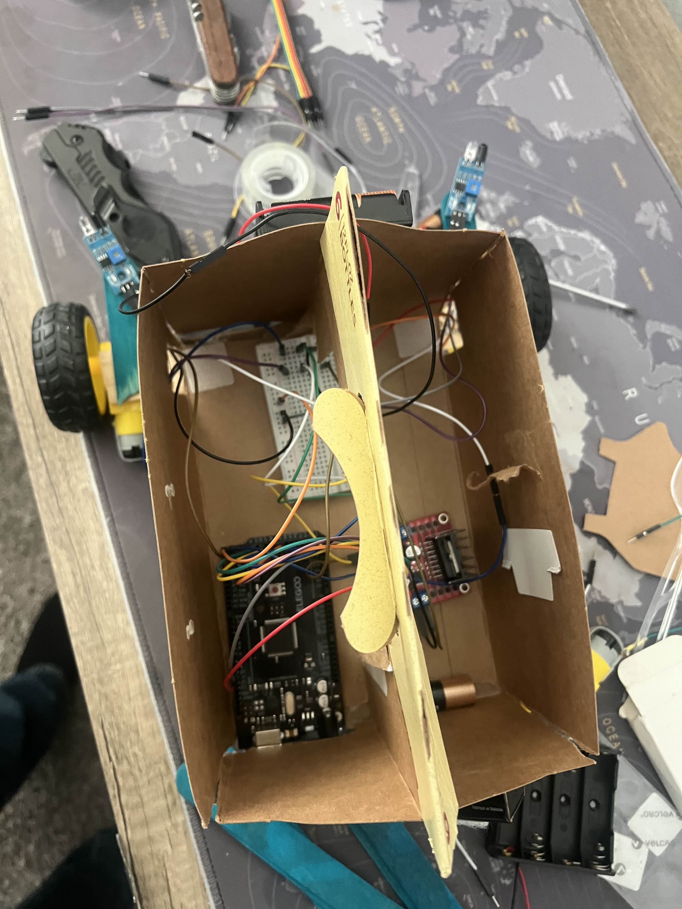
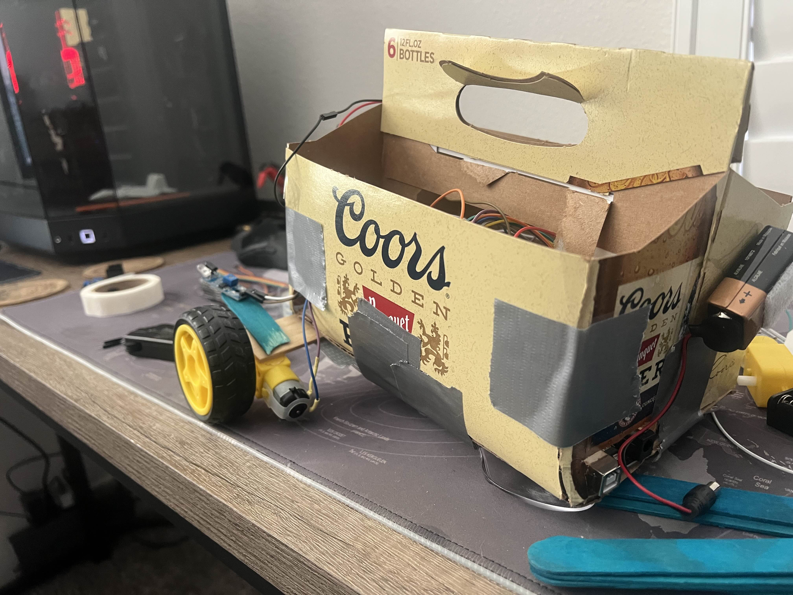

Project Overview
Objective: Design and construct an autonomous wall-avoiding car capable of detecting and navigating around obstacles using infrared sensors and an Arduino microcontroller. The goal was to create a system that could self-correct its path and maneuver through a hallway without user input.
This was an individual project for my Mechatronics course. I developed the full circuit design, wiring, and Arduino code manually, testing the vehicle through multiple prototypes to achieve consistent motion and reliable wall detection:contentReference[oaicite:1]{index=1}.

Design and Development
The car was built on a simple two-wheel differential drive system with DC motors controlled through an L298N motor driver. Three IR distance sensors provided proximity feedback to detect obstacles on the front and sides. The chassis was made from cardboard and tape during initial prototyping due to limited materials, later reinforced with wooden supports for stability.
I encountered major challenges with chassis alignment—glue dots and duct tape caused shifting over time, which affected wheel tracking and sensor angle calibration. To solve this, I added a paint stick brace across the base, improving rigidity, though alignment still degraded after repeated testing:contentReference[oaicite:2]{index=2}.
- Hardware: Arduino Uno, L298N motor driver, 2 DC motors, IR distance sensors, 9V battery
- Tools: Arduino IDE (C++), basic breadboard prototyping
- Design Focus: Sensor placement, straight-line motion, and obstacle-triggered turning logic

Performance Issues and Troubleshooting
The largest issue was inconsistent motor performance. Small variations in battery voltage, motor efficiency, and surface friction caused each run to behave differently. Different battery brands changed torque output, making calibration unpredictable between tests. Duracell batteries performed best in controlled home testing but produced erratic behavior during school trials:contentReference[oaicite:3]{index=3}.
Surface type also affected traction and turning angles. Despite tuning code delays and sensor thresholds, the car’s path would drift or overcorrect depending on the floor texture. Wheel alignment degradation from repeated tests further compounded inconsistencies.
One major failure occurred when a wheel stopped responding during the final demonstration, preventing proper obstacle avoidance. Post-test inspection revealed a loose wire and uneven power output to one motor.
Lessons Learned
This project reinforced key engineering principles including the importance of mechanical stability and component consistency in embedded systems. I learned that even small mechanical misalignments or variations in power delivery can lead to large control errors in autonomous vehicles.
Future iterations would use a rigid chassis (wood or plastic), soldered electrical connections, and regulated power delivery to minimize drift and improve repeatability across different surfaces. Despite its issues, the project successfully demonstrated real-time sensor response and motor control logic using fundamental mechatronic systems.
Gallery
